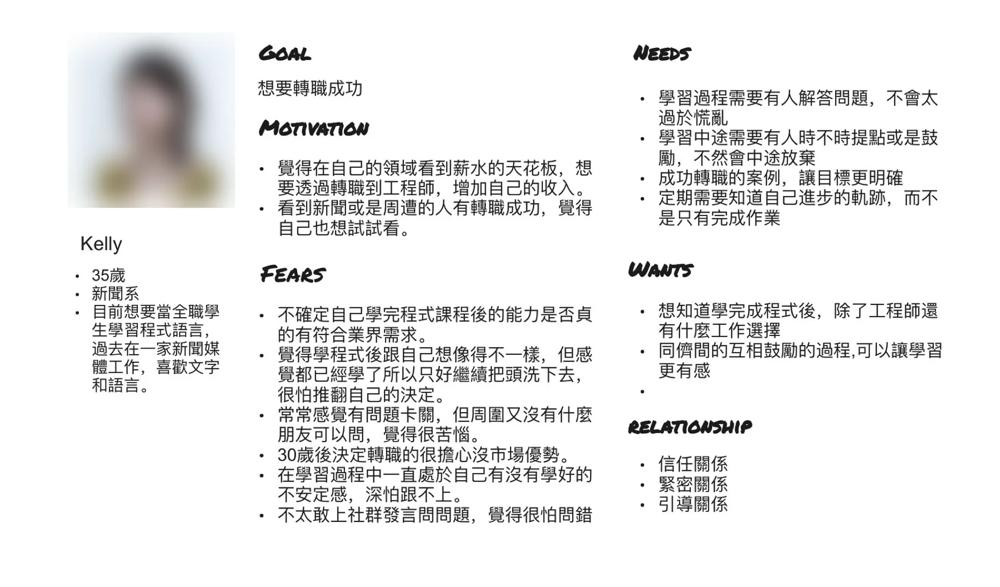
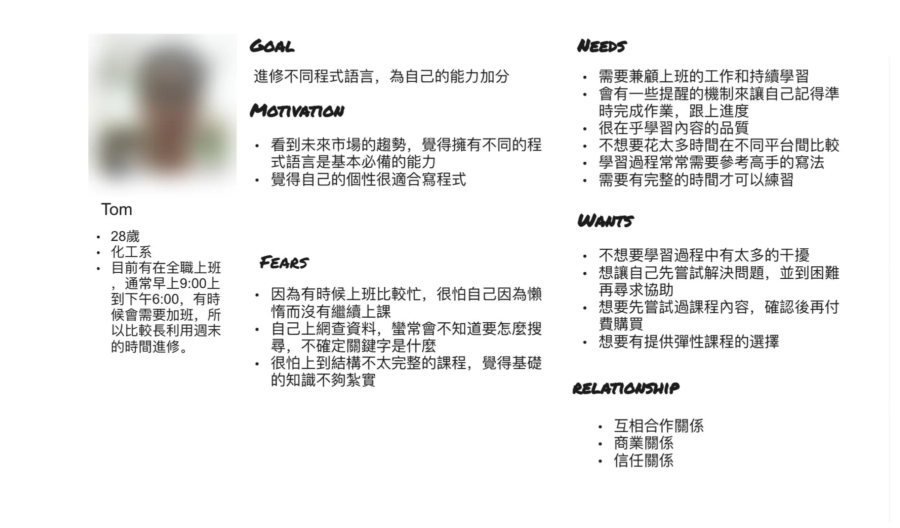
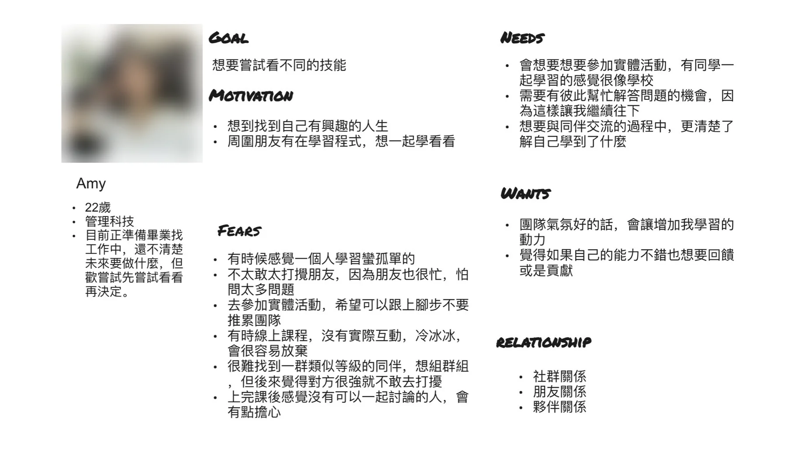

自分の力を確認し、詰まった時に支援を得る
35歳。メディア職からエンジニアへの転職を希望。習得スキルが業界要件に届くか不安で、行き詰まりや自己疑念の際に回答と励ましを必要とします。

AlphaCampでは受講後、プラットフォームや学習コミュニティとの関わりが減り、成果の自発的な共有も少ない状態でした。学習者インタビュー、関係性調査、参加型ワークショップを通じて、信頼・学習支援・コミュニティ参加を左右する要因を分析し、異なる学習ニーズに向けたサービス改善の方向へ変換しました。
調査チームの一員として、以下を担当・参加しました。
AlphaCampでは3つの問題が見られました。
受講後、学習者とプラットフォームの交流はほぼなく、深い関係に発展していませんでした。
AlphaCampコミュニティ内の交流は想定ほど活発ではありませんでした。
学習成果を自ら外部に共有することは少ない一方、AlphaCampから依頼すると多くの学習者がレビューに協力しました。
関係形成と継続を左右する要因が分からなかったため、学習体験全体を振り返り、信頼の形成、関係を強める・弱める経験、継続参加と共有を促す要因を調べました。
調査前に、私が調査フレームとワークショップ方法を設計しました。まずAlphaCamp社内でステークホルダーマップ、既存の受講ジャーニー、4つの仮説ペルソナを整理し、学習者像をそろえ、インタビューで検証すべき点を決めました。
プログラミングを学ぶ9名（AC受講者4名、非受講者5名）と、TA・専門家へインタビューしました。目的、動機、背景、学び方など関係性に影響する行動変数から3つのペルソナを整理しました。
35歳。メディア職からエンジニアへの転職を希望。習得スキルが業界要件に届くか不安で、行き詰まりや自己疑念の際に回答と励ましを必要とします。
28歳。フルタイム勤務後や週末に学習。時間効率、内容の質、柔軟な進度を重視し、習慣維持のためのリマインドも必要です。
22歳。就職活動に向けて、さまざまなスキルを試したいと考えています。仲間と一緒に学ぶことや交流を重視し、一人で学ぶときや授業で交流がないときは、諦めやすくなります。



関係を強める・弱める経験についても語られました。
学習者は自身の経験に基づいてワードカードを選び、2通を書きました。ラブレターには安心感、ガイド、つながった学習内容、別れの手紙には講座の負担、退屈さ、タイムリーな交流とつながりの不足が表れました。
インタビューと関係性調査で繰り返し現れた障壁を、5つの改善機会へ整理しました。これは調査の統合結果であり、公開済みの5サービスではありません。
私が進行したアイデアワークショップでは、KellyとTomのニーズに向けたサービス案を発散しました。参加型シナリオワークショップで具体的な学習場面へ戻し、課題・ニーズ・サービス方法を議論しました。いずれも構想と提案であり、実装済みではありません。
転職時の不確実性、行き詰まり、孤独、自己疑念に対応。
細切れの時間、学習習慣、講座選び、情報ニーズに対応。
各案は学習シナリオに対応しています。緊急度と発生頻度で並べ、優先シナリオを特定しました。以下の3例は、調査で見つけた障壁からサービス案を導く過程です。
エンジニア転職に向け疑問は多いものの、質問方法や理解できない時の聞き返し方が分からない。
「課題で行き詰まる」を、問題を説明できない、聞く相手がいない、大人数で聞きづらい、回答を信頼できない、オンライン情報を判断できないという原因へ分解しました。
問題記述の練習、過去質問集、同レベルの学習グループと学習者コーチ、匿名質問、仲間やTAへすぐ連絡できるヘルプボタンを提案しました。
まだ足りないと感じ、現在地や必要なスキルが分かりません。
課題完了だけでなく、成長の軌跡とキャリア目標までの差を定期的に把握する必要があります。
章ごとのスキル確認、累積能力の振り返り、段階別チェックリスト、ゲームのスキルツリーを参考にした可視化を提案しました。
学習中の疲れや落ち込み、週ごとに変わる学習時間、エンジニア以外のキャリア可能性へのニーズがありました。
中盤以降の負担で社会人学習者が遅れ、転職希望者は方向を誤る不安を抱えていました。
休息週と柔軟な進度、ペース別の講座選択、キャリア分析、有料メンター、章ごとの要点まとめを提案しました。
受講後の関わり不足を起点に、インタビューと関係性調査で、信頼、学習ガイド、コミュニティ参加、キャリア期待に関する障壁を特定しました。結果を5つの機会へ整理し、アイデア・シナリオワークショップを通じて具体的なサービス案へ変換し、今後の企画に使える根拠を作りました。
以上は構想と提案であり、公開済み機能ではありません。
本件は調査・サービスデザインプロジェクトであり、継続率やコンバージョン等の定量成果はありません。
 保険 SaaS · B2B · 2024
保険 SaaS · B2B · 2024案件ごとのフルカスタムでも完全標準化でもなく、テンプレート＋制御されたモジュール化で必要な差異と再利用を両立しました。
 OneSleeve · セキュリティデザインシステム · 2026
OneSleeve · セキュリティデザインシステム · 2026現状維持・全面再構築・統合を比較し、共通構造を一元管理しながらブランドと製品差を変数で残す方針を選びました。
 Ferqo · IoTスマートホーム · 2019
Ferqo · IoTスマートホーム · 2019調査から、個々のデバイス操作ではなく生活シーン全体の切り替えが求められていると分かり、部屋と「ワンタップの快適さ」を軸に中核フローを再設計しました。